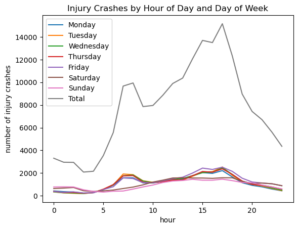

import pandas as pd
import seaborn as sns
import numpy as np
import matplotlib.pyplot as plt
---------------------------------------------------------------------------
ModuleNotFoundError Traceback (most recent call last)
Cell In[1], line 1
----> 1 import pandas as pd
2 import seaborn as sns
3 import numpy as np
ModuleNotFoundError: No module named 'pandas'
time_data = pd.read_excel("data/time_2019.xlsx", header=3, index_col=0, sheet_name=None)
time_data.keys()
dict_keys(['Table 2A', 'Table 2B', 'Table 2C', ' Table 2D', ' Table 2E', 'Parameters'])
fatal_crashes = time_data["Table 2B"].astype(float)
fatal_crashes = fatal_crashes.drop(index=['A.M. Total', 'P.M. Total', 'Unknown hour', 'Total'])
fatal_crashes.index = np.arange(24)
ax = sns.lineplot(fatal_crashes['Total'])
ax.set(xlabel='Hour of Day', ylabel='Total', title='Total Fatal Crashes By Hour of Day')
[Text(0.5, 0, 'Hour of Day'),
Text(0, 0.5, 'Total'),
Text(0.5, 1.0, 'Total Fatal Crashes By Hour of Day')]
Looking at the graph above, we see that the peak number of fatal crashes is late at night near 9:00 PM, which could be the result of reckless driving during the night when people may have a harder time seeing.
The lowest peak in the graph lies around 9:00 AM, which could be the result of traffic jams where people are unable to drive recklessly.
injury_crashes = time_data['Table 2C'].astype(float)
injury_crashes = injury_crashes.drop(index=['A.M. Total', 'P.M. Total', 'Unknown hour', 'Total'])
injury_crashes.index = np.arange(24)
injury_crashes.head()
| Monday | Tuesday | Wednesday | Thursday | Friday | Saturday | Sunday | Total | |
|---|---|---|---|---|---|---|---|---|
| 0 | 428.0 | 339.0 | 352.0 | 398.0 | 380.0 | 639.0 | 775.0 | 3311.0 |
| 1 | 366.0 | 260.0 | 266.0 | 292.0 | 303.0 | 680.0 | 789.0 | 2956.0 |
| 2 | 334.0 | 222.0 | 243.0 | 294.0 | 346.0 | 729.0 | 778.0 | 2946.0 |
| 3 | 236.0 | 196.0 | 202.0 | 234.0 | 250.0 | 443.0 | 529.0 | 2090.0 |
| 4 | 274.0 | 276.0 | 291.0 | 279.0 | 271.0 | 383.0 | 388.0 | 2162.0 |
plt.plot(injury_crashes, label=injury_crashes.columns)
plt.xlabel("hour")
plt.ylabel("number of injury crashes")
plt.title("Injury Crashes by Hour of Day and Day of Week")
plt.legend()
plt.show()
